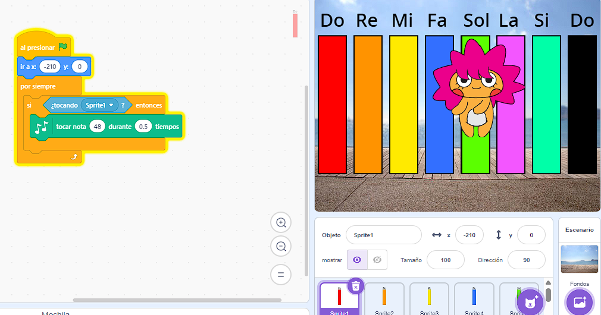
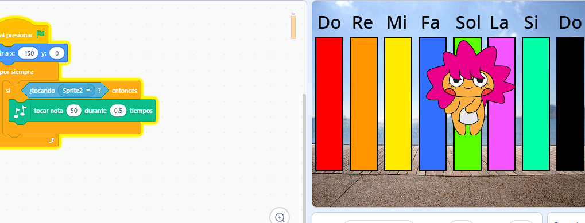
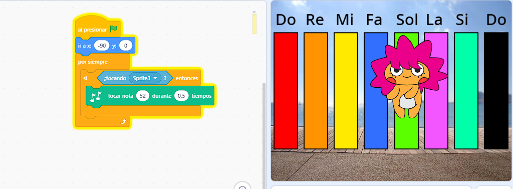
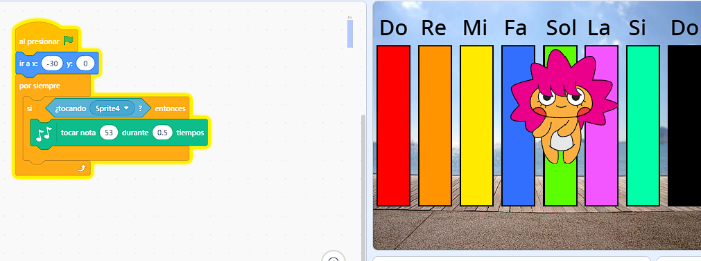
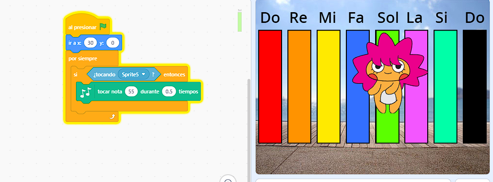
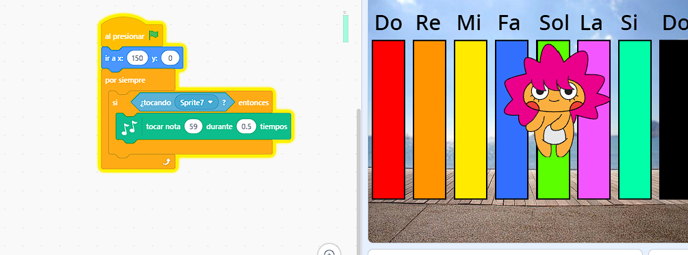
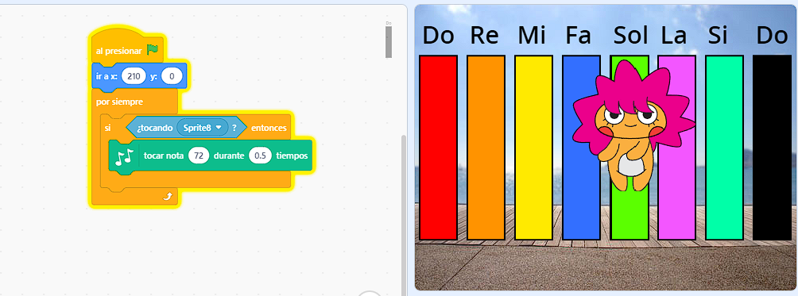
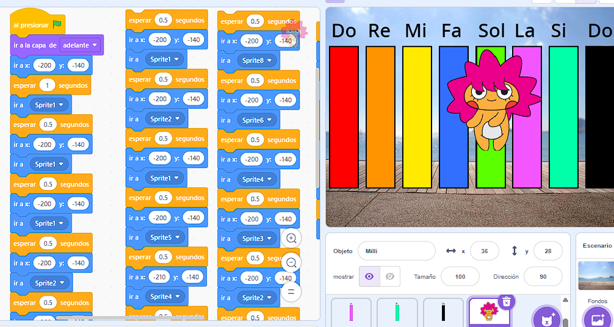
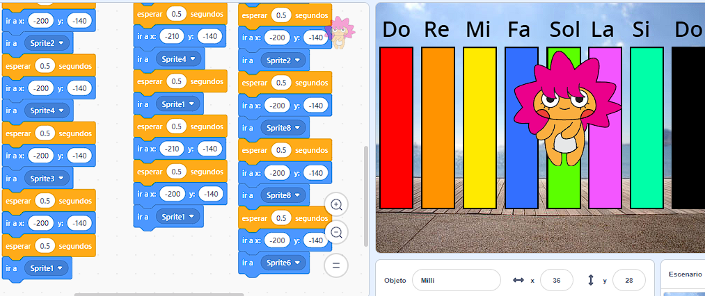
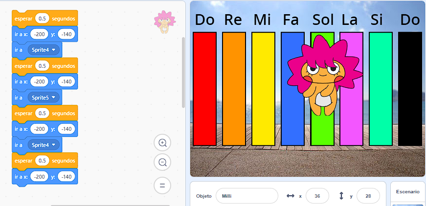

Terceras actividades en Scratch
Para la actividad de Scratch 3, realizamos los ejercicios propuestos, creando un juego de tatetí y una canción de cumpleaños utilizando notas musicales.
En el juego de tatetí, trabajamos con la organización de las casillas y las reglas necesarias para que los jugadores pudieran realizar sus jugadas. Esta actividad nos permitió explorar cómo programar acciones y establecer condiciones para el funcionamiento del juego.
En el segundo ejercicio, creamos una canción de cumpleaños utilizando botones que reproducían diferentes notas musicales: do, re, mi, fa, sol, la, si y do. De esta manera, pudimos experimentar con los sonidos y aprender a programar acciones que se ejecutan al presionar cada botón.
Una vez finalizados los ejercicios, guardamos los proyectos en nuestras cuentas de Scratch y realizamos capturas de pantalla para registrar el trabajo realizado.
────────── ⋆⋅☆⋅⋆ ──────────
Actividad: Canción Feliz Cumpleaños










✦•┈๑⋅⋯ ⋯⋅๑┈·✦
Actividad: Tatetí

✦•┈๑⋅⋯ ⋯⋅๑┈·✦
Reflexión sobre las posibilidades de Scratch en las prácticas de Idioma Español
Consideramos que estas actividades ofrecen distintas posibilidades para nuestras prácticas de Idioma Español, ya que Scratch permite crear recursos interactivos que pueden utilizarse para trabajar diversos contenidos de una manera más dinámica y participativa.
Por ejemplo, podríamos adaptar el juego de tatetí para trabajar contenidos gramaticales, como las categorías de palabras, las clases de oraciones o las reglas de acentuación. Para colocar una ficha, los estudiantes tendrían que responder correctamente una pregunta o resolver una consigna relacionada con el tema que estemos trabajando.
En cuanto a la actividad musical, podríamos aprovechar los botones y los sonidos para trabajar con la poesía, la rima y la musicalidad del lenguaje. Una posibilidad sería crear una actividad en la que los estudiantes escuchen palabras y tengan que encontrar otras que rimen con ellas. También podríamos utilizar fragmentos de poemas o canciones para reconocer rimas, repeticiones y otros recursos expresivos.
Creemos que estas propuestas pueden favorecer la motivación de los estudiantes y ofrecer diferentes formas de acercarse a los contenidos. Además, permiten que los alumnos participen activamente y no sean solamente receptores de información.
De todos modos, consideramos que es importante que cada actividad tenga un objetivo didáctico claro y que su utilización esté relacionada con los contenidos que se estén trabajando en clase. De esta manera, Scratch puede convertirse en una herramienta complementaria para enseñar Idioma Español de forma creativa e interactiva.